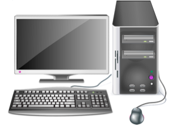

Una computadora es una maquina o dispositivo electrónico que está diseñada para facilitarnos la vida. Es una herramienta que nos permite desarrollar múltiples tareas.
En las computadoras podemos guardar mucha información. (Documentos, imágenes, música, fotos, videos, sonidos, juegos, etc.)
¿Para qué sirven las computadoras?
Estas máquinas las podemos usar para:
- Escribir
- Dibujar
- Hacer cálculos
- Comunicarnos con otras personas
- Divertirnos: jugando, escuchando música o viendo videos y fotos.
Gracias a las computadoras se puede realizar de manera fácil y rápida cualquier tarea.